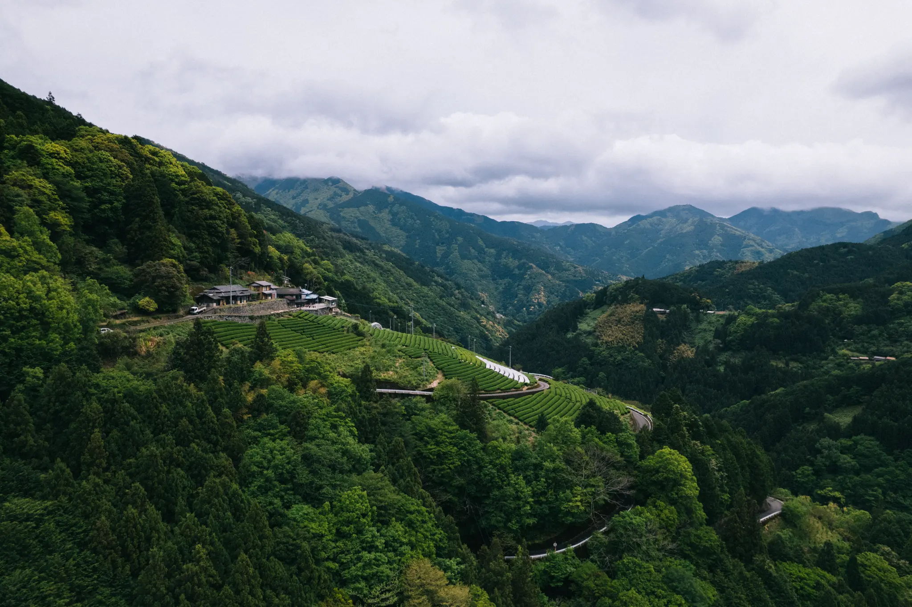

Heart, Skill, Body — A True Tea Crafted with All Three

Tea-making is not simply cultivating a crop. It is a supreme art that only comes to life when the producer's heart, skill and body are pushed to their limits. Kyokufu-en's tea fields scatter across the mountain valleys of Yamashiro-cho, Tokushima — between 200m and 500m elevation. These are precipitous slopes so steep that once you start sliding you cannot stop; cool, harsh inclines year-round. Intense temperature swings draw up a deep morning dew (morning mist) from the Yoshino River that envelops the fields.
Morning Dew That Brings a "Dashi-like Umami"

This morning dew acts as a natural sunshade, protecting the leaves from harsh sunlight and suppressing bitterness. When these concentrated leaves are brewed in a kyusu teapot, they yield a clear, dashi-like depth of umami and a refreshingly pure aroma — an overwhelmingly luxurious experience that will take anyone's breath away.
Traditional Technique: Pesticide-free, Low-temperature Light Steaming

Kyokufu-en steadfastly practices cultivation without any pesticides to avoid burdening the natural environment. Though it cannot be mass-produced, it fully realizes the potential of the rare first flush plucked as one bud and two leaves. Using Shikoku's mountain tradition of light steaming (asamushi) to halt oxidation, and carefully performing low-temperature "hi-ire" (heat treatment) over time, they preserve the tea's delicate natural flavors and pure aroma that would be lost under high-temperature mechanical processing — resulting in a supreme craft green tea.